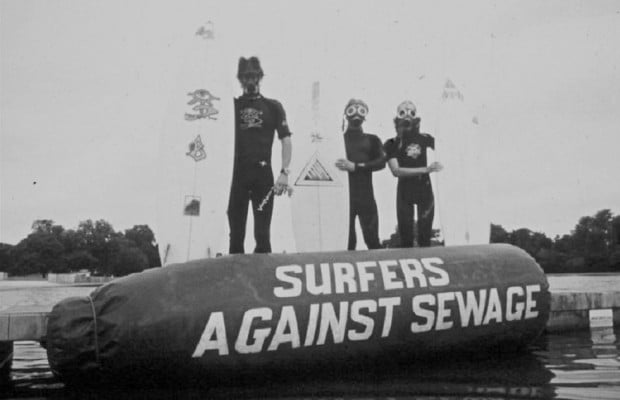

Organizations
- BreatheLife Organization
BreatheLife is a global campaign that mobilizes cities and individuals to take action on air pollution to protect our health and the planet. The campaign is led by the World Health Organization (WHO), UN Environment Programme (UNEP) and the Climate & Clean Air Coalition (CCAC). BreatheLife combines public health and climate change expertise with guidance on implementing solutions to air pollution in support of global development goals.The BreatheLife campaign is calling for governments - city, regional and national - to commit to achieving WHO Air Quality Guidelines by 2030. Reducing air pollution to levels deemed safe by the WHO will halve the number of air pollution related deaths by 2030, while at the same time helping to slow the rate of climate change.
- Connect cities: Provide a platform for cities to share best practices and demonstrate progress in their journey to meeting WHO air quality targets by 2030
- Increase monitoring: Work with municipalities to expand monitoring efforts that can keep citizens informed and facilitate more sustainable urban development
- Accelerate solutions: Build demand for new solutions that are working and support municipalities in effectively implementing them in their own cities
- Build public awareness: Increase support for city and national action to reduce air pollution and short-lived climate pollutants to meet health and development priorities by 2020, and the Sustainable Development Goals by 2030.
- Empower individuals: Educate people about the burden air pollution poses to our health and our climate and provide meaningful ways to take action both locally and global
- Surfers Against Sewage
Mission and Vision
We’re a community dedicated to the protection of oceans, waves, beaches and wildlife. We fight long and hard to protect what we love and we won’t stop until it’s completely clean, safe and protected for everyone, forever. From humble beginnings in Porthtowan Village Hall in 1990, we’ve stayed close to our roots and continue to be based just up the road at our St Agnes HQ where we can keep an eye on the sea. Just 20 of us work in the office full time, but it’s really thanks to people like you who support our work through membership donations, volunteering, signing petitions, buying from our shop and spreading the word that allows our impact to be widely felt. We began as a response by the surfing community to the dreadful state of our beaches. Those hardy souls who ventured into the water back then often found themselves swimming in raw sewage. There’s tales of sanitary towels on heads and human poo sandwiched between bodies and boards. Completely unacceptable. The campaign grew loud, proud and strong and thanks to the passion and perseverance of our members — the UK now enjoys some of the cleanest beaches in Europe. Of course it’s not just surfers who care passionately about our coastlines — our members are swimmers, dog walkers, paddleboarders, beach cleaners, kite surfers, sandcastle builders, ice cream eaters and sun bathers too. We protect it because we love it and that’s where we feel most at home. We’ll always care about Water Quality issues and our Safer Seas Service continually monitors sewage spills in real time on beaches around the UK. But ‘Plastic is the new sewage’ as it is now the biggest threat to our beaches, our precious marine eco-system and our happiness.
